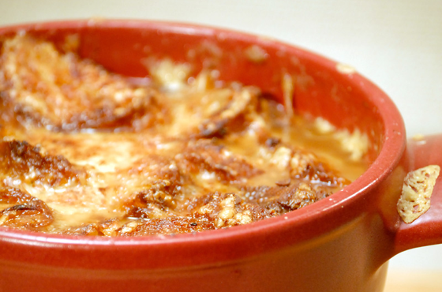

Soups
Ingredients
- 2 cup chicken breast (cooked and shredded)
- ½ cup bacon (cooked and crumbled)
- ¼ cup unsalted butter
- 1 cup red bell pepper (diced)
- 1 cup onion (diced)
- 1 tsp minced garlic
- ½ cup all-purpose flour
- 6 cups chicken broth
- 3 red potatoes (diced)
- 4 oz green chilies
- 12 oz corn
- 1 tsp thyme
- ½ tsp salt
- ¼ tsp pepper
- 1½ cups half and half
Directions
- In a large soup pot melt butter. Add in bell peppers and onions and saute for 2-3 minutes until tender. Add in minced garlic for the last 30 seconds.
- Whisk in flour and once dissolved slowly whisk in chicken broth. Once all the chicken broth is in the soup add in cooked and shredded chicken, diced red potatoes, green chilis, corn, and seasonings. Bring to a boil and then reduce to a simmer and allow to cook for 15-20 minutes or until potatoes are tender.
- Remove from heat and mix in half and half. Mix together well then serve with cooked and crumbled bacon.

Submitted by Leslie Moore
It never fails on rainy days I want something warm and savory get full on and take a nap. One this particular rainy day I was looking for something to cook but I needed all the ingredients to already be in my house. I was determined not to go to the grocery store in messy weather. I found this chowder on Pinterest and it was a hit! I enjoyed every bit of this and it lasted me a few days.

Lyonnaise Onion Soup Gratineé
Prep Time: 20 min | Cook Time: 85 min | Total Time: 105 min
Ingredients
- 2 tbsp unslated butter, plus more for toasting baguette
- 1 tbsp olive oil
- 1¼ lbs (about 3) yellow onions, peeled and thinly sliced
- 1 tsp sea salt, plus more as needed
- ½ tsp freshly ground black pepper, plus more as needed
- 2 large garlic cloves, minced
- 1 cup dry white wine
- 5 thyme sprigs
- 8 cups low-sodium chicken broth
- ½ baguette
- 10 oz Comté or Gruyere cheese, grated
Directions
- Preheat oven to 375°F and position rack in center.
- In a large, heavy saucepan or Dutch oven over medium heat, add butter and olive oil. When butter is melted, add onions, cover and cook, stirring with a wooden spoon occasionally until soft and translucent, about 20 minutes. Uncover and add salt and pepper. Continue to cook, stirring often and scraping the bottom of the pan to release the brown bits, until onions are a deep dark brown color, about 30 minutes more.
- Add garlic and sauté until softened. Add wine to deglaze pan. When the liquid is almost completely reduced to dry, add the thyme and broth. Bring soup to a simmer and cook until the flavors have developed, about 30 minutes. Taste and adjust seasoning with salt and pepper.
- While the soup is simmering, slice baguette into 1/2-inch thick slices. Butter both sides of the bread and toast in the oven until golden brown. Remove toasted bread from the oven and increase the heat to 425°F.
- To serve: Divide soup between individual cocottes, filling to the top, and place on a rimmed baking sheet. Place enough toasted bread on each soup to cover most of the surface area and top with a generous layer of cheese. Place soups in the oven and bake until the cheese melts and turns golden brown and bubbly. Serve immediately with additional freshly ground black pepper. (Yields 4 servings)
Submitted by Lance Werling
I made this recipe as part of a cooking class and absolutely loved it. Figured this is the best time to share given it's a hearty soup that warms you up as the weather starts to cool down.
Bob's Chile Verde - Green Chili
Prep Time: 10 min | Cook Time: 1-2 hrs | Total Time: 1-2 hrs
Ingredients
- 3-4 lbs pork shoulder roast, cut into strips then into small cubes (throw our any gristle or large sections of fat)
- 5 yellow onions, diced into small pieces
- 2 tbsp garlic powerder; or 8 garlic cloves, minced
- (2) 10 oz canned dice ortega or hatch green chiles
- (4) 14 oz canned chicken stock
Seasonings
- ½ tsp cumin
- 1 tbsp oregano
- 2 tsp salt
- ½ tsp black pepper
Directions
- Brown the prok in small batches in a deep skillet, then add to pot.
- Saute onions in light oil until carmelized, do this in 2 batches, then add to pot.
- Saute minced garlic in oil (do not overcook, it will turn garlic bitter) then add to pot.
- Add diced ortega/green chiles to pot.
- Add chicken stock to pot.
- Mix all ingredients in a large cooking pot. Bring to boil, stirring CONSTANTLY.
- Lower heat and simmer for 1-2 hours, covered. Stir every 15 min.
- Serve green chile in bowls over hominy and pinto beans with flour or corn tortillas.
Note: freeze extra for future meals

Submitted by Bob Ruybal
Making Chili Verde Posole (soup) at Christmas has been a family tradition for over 4 generations.